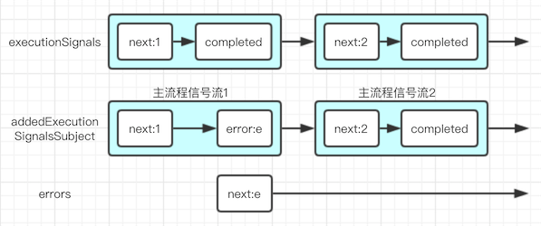
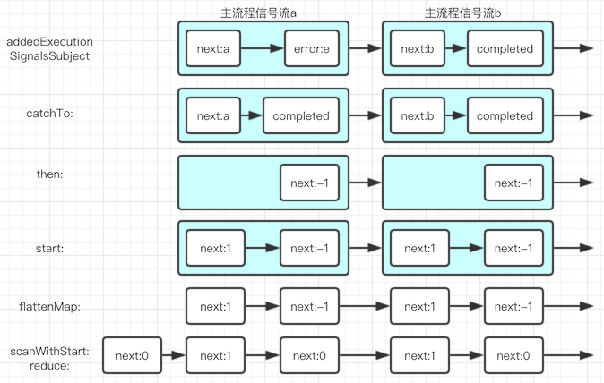
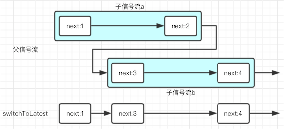

| 更新时间 | 更新内容 |
|---|---|
| 2017-09-19 | 发布 |
RAC中用RACCommand处理指令前言RACCommand的用途RACCommand的公开属性和方法executionSignals & errorsallowsConcurrentExecutionexecuting & enabled初始化方法 - initWithEnabled:signalBlock:执行指令方法 - execute:RACCommand的内部实现执行指令方法 - execute:RACSignal的catchTo:方法内部信号流 & 初始化方法 - initWithEnabled:signalBlock:RACCommand细节探究为什么一定要使用『主流程信号流』的形式为什么要单独封装errors信号流为什么主流程信号流执行时还需要一个input参数RACCommand的实际使用UIButton的RACCommand扩展实例代码关于switchToLatest总结
信号流 - 即RACSignal，一组next / error / completed信号组成，本文称之为信号流。
发送信号 - sendNext / sendError / sendCompleted，统称为发送信号。
主流程信号流 - execute:成功执行一次指令产生的指令流程信号流。
因为将RACSignal也称为信号，容易引起理解的困难，而其通常就是一组信号组成，所以在这里称之为信号流。
通常来说我们的App中会存在很多UI指令需要等待异步处理完成（比如等待网络请求返回结果），处理这些UI指令时如果我们手动去处理逻辑的话，一般需要完成以下内容：
而RACCommand的出现就是为了将以上大部分逻辑封装起来，方便大家使用。
在指令成功开始执行后executionSignals会发送一个信号，信号内包含的数据是一个信号流。对，这是一个信号流的信号流，和指针的指针一样绕口。后面介绍内部实现的时候再详细介绍这个属性。
在指令开始执行但遇到错误时errors会发送一个next信号，信号的数据是一个NSError。这里不能发送error信号，因为发送error信号后这整个信号流就会终止了。
是否支持同时多次执行指令，通常来说都会使用默认值NO。在本文里，我们暂不讨论此属性值为YES的情况。
executing用来标记指令是否正在运行，通常用于绑定到loading界面的hidden属性上。
enabled用来标记指令是否可以运行，通常用于绑定到UIButton的enabled属性上。
一般来说以下两种情况下enabled为NO：
enabledSignal，且enabledSignal返回NO的时候。enabledSignal参数在上面提到了，用于控制指令是否可执行。
而signalBlock参数是为了传递数据和执行指令流程用的，先看一下这个block的类型：
RACSignal<ValueType> * (^)(InputType _Nullable input)
返回一个信号流，要求输入一个input值。这里返回的信号流就是给之前的executionSignals用的，而这里的输入值就是后面的execute:方法要用的。具体为什么要用这种方式，会在后面的单独章节里介绍。
execute:方法用于执行指令，input用于传递一些自定义的数据，这个输入值可以为空。
在指令可以执行时，会通过executionSignals发出成功开始执行指令的主流程信号流并将之返回，否则会直接返回一个RACErrorSignal，另外在执行指令过程中遇到的错误信号会由errors信号流收集后统一发出。
如果想要获得单次执行的内部信号流，特别是想要获得信号流里的原始错误，可以从execute:方法的返回值获得对应信号流。
细看execute:方法的内部逻辑：
首先判断了现在指令的enabled状态，如果不可运行则会直接返回一个RACErrorSignal后终止。
enabled实时的状态是通过一个内部的immediateEnabled信号流来获得的：
_immediateEnabled = [[[[RACSignal
combineLatest:@[ enabledSignal, moreExecutionsAllowed ]]
and]
takeUntil:self.rac_willDeallocSignal]
replayLast];
可以看到immediateEnabled信号流就是把enabledSignal信号流和moreExecutionsAllowed信号流进行逻辑与计算，在他们都是YES的情况下就会返回『可以运行』。
enabledSignal是外部传入的不用讲解了，所以再来看看moreExecutionsAllowed信号流的实现：
RACSignal *moreExecutionsAllowed = [RACSignal
if:[self.allowsConcurrentExecutionSubject startWith:@NO]
then:[RACSignal return:@YES]
else:[immediateExecuting not]];
因为我们之前说了不考虑支持同时多次执行指令，所以这里moreExecutionsAllowed实际上永远返回immediateExecuting的逻辑取反结果，也就是说保证了指令不可以同时多次执行。
用初始化时传入的signalBlock创建用于传递指令执行过程的主流程信号流，并断言验证确保其不为空。
将主流程信号流扔到主线程的RACScheduler里去，从注释看出来这样可以保证在executing和enabled信号流变更生效之后，主流程信号流才开始真的运作。
内部其它信号的触发，基本都是通过addedExecutionSignalsSubject这个RACSubject来组织的：
[self.addedExecutionSignalsSubject sendNext:connection.signal];
可以看到这里也是将刚刚创建的主流程信号流当做参数放在了信号里，方便后续的信号管道逻辑取用。
讲内部信号组织之前需要讲解下catchTo:是用来做什么的，这要首先看一下catch:：
- (RACSignal *)catch:(RACSignal * (^)(NSError *error))catchBlock {
NSCParameterAssert(catchBlock != NULL);
return [[RACSignal createSignal:^(id<RACSubscriber> subscriber) {
RACSerialDisposable *catchDisposable = [[RACSerialDisposable alloc] init];
RACDisposable *subscriptionDisposable = [self subscribeNext:^(id x) {
[subscriber sendNext:x];
} error:^(NSError *error) {
RACSignal *signal = catchBlock(error);
NSCAssert(signal != nil, @"Expected non-nil signal from catch block on %@", self);
catchDisposable.disposable = [signal subscribe:subscriber];
} completed:^{
[subscriber sendCompleted];
}];
return [RACDisposable disposableWithBlock:^{
[catchDisposable dispose];
[subscriptionDisposable dispose];
}];
}] setNameWithFormat:@"[%@] -catch:", self.name];
}
catch:方法的核心就在于对error信号的处理，参照上面的代码可以看到，catch:方法在原信号流sendError的时候，将对应的NSError通过catchBlock转换成了一个新的信号流并让原订阅者继续订阅。
参照以下例子：
// 原始信号
RACSignal *signal = [RACSignal createSignal:^RACDisposable * _Nullable(id<RACSubscriber> _Nonnull subscriber) {
[subscriber sendNext:@1];
[subscriber sendError:nil];
return nil;
}];
// 经过catch:方法将sendError:nil替换为sendNext:@2
RACSignal *catchedSignal = [signal catch:^RACSignal * _Nonnull(NSError * _Nonnull error) {
return [RACSignal return:@2];
}];
// 输出日志
[catchedSignal subscribeNext:^(id _Nullable x) {
NSLog(@"sendNext: %@", x);
} error:^(NSError * _Nullable error) {
NSLog(@"sendError");
} completed:^{
NSLog(@"sendCompleted");
}];
最终输出结果如下，其中的错误信号被替换了：
sendNext: 1 sendNext: 2 sendCompleted
而catchTo:又是做什么的，我们来看一下：
- (RACSignal *)catchTo:(RACSignal *)signal {
return [[self catch:^(NSError *error) {
return signal;
}] setNameWithFormat:@"[%@] -catchTo: %@", self.name, signal];
}
可以看到逻辑很简单，就是预先传入了一个signal，无论收到的sendError传了什么类型的NSError，都直接返回这个signal。
这样的话上面的例子中间的catch:就可以替换为：
RACSignal *catchedSignal = [signal catchTo:[RACSignal return:@2]];
讲完了catch:系列方法，就可以开始细细讲初始化方法内各种信号的组织了。
最开始做的都是一些常规的初始化操作，创建内部使用的RACSubject，然后将外部传入的signalBlock存下来。
_executionSignals = [[[self.addedExecutionSignalsSubject
map:^(RACSignal *signal) {
return [signal catchTo:[RACSignal empty]];
}]
deliverOn:RACScheduler.mainThreadScheduler]
setNameWithFormat:@"%@ -executionSignals", self];
第一个处理的信号流就是供外部使用的executionSignals，将execute:里发出的主流程信号流进行了一次catchTo:操作后，再传出供外部使用。这里是为了将sendError统一由后面的errors信号流捕获，所以才需要进行catchTo:操作。在主流程信号流进行sendError的时候，NSError会被catchTo:吞掉，而我们重新创建的又是个空信号流，所以外部的订阅者就收不到这个错误信号了。
RACMulticastConnection *errorsConnection = [[[self.addedExecutionSignalsSubject
flattenMap:^(RACSignal *signal) {
return [[signal
ignoreValues]
catch:^(NSError *error) {
return [RACSignal return:error];
}];
}]
deliverOn:RACScheduler.mainThreadScheduler]
publish];
_errors = [errorsConnection.signal setNameWithFormat:@"%@ -errors", self];
[errorsConnection connect];
可以看到errors信号的核心就是通过ignoreValues排除sendNext，仅仅获得sendError，然后将sendError转换为发送NSError值的sendNext。
简单用图片概括下这两个主要的信号流：

其中蓝色框的本身就是个信号流，也被当做一个信号发送，就是前文说到的『信号流的信号』。
后面的信号流有的已经讲过了，有的很简单不需要讲解了，我就再重点讲一下这个信号流：
RACSignal *immediateExecuting = [[[[self.addedExecutionSignalsSubject
flattenMap:^(RACSignal *signal) {
return [[[signal
catchTo:[RACSignal empty]]
then:^{
return [RACSignal return:@-1];
}]
startWith:@1];
}]
scanWithStart:@0 reduce:^(NSNumber *running, NSNumber *next) {
return @(running.integerValue + next.integerValue);
}]
map:^(NSNumber *count) {
return @(count.integerValue > 0);
}]
startWith:@NO];
看上去很绕，看着很头大，不过整理成图片后应该好理解的多：

最后的两步就不再画了，再画要画不下了……😂
这整个过程的一个主旨就是每次启动一个新的主流程信号流，就发送个+1信号，每次一个主流程信号流结束，就发送一个-1信号，最后统计计算出现在正在运行的指令流程总个数，判断现在是不是有指令正在执行。是不是了解了思路之后再回头看代码，就清晰无比了。😜
虽然内部代码也都看懂了，可是有些地方为什么要设计成这样还是值得探究的。
很多人要问，为什么不是直接发送一个执行成功或一个执行失败两种信号就可以了。
这里要说下执行的流程，这个流程不一定是单步的，所以使用RACCommand的时候是需要了解每一步执行的情况的。比如以下载文件为例：整个流程可能分为获得文件地址列表，逐个下载文件，全部下载完成，下载失败等各种步骤和状态。
这种时候每一个单独的执行流程就作为一个整体封装起来就更合理，而封装『流程』最合适的当然就是信号流了。
这样可以使得我们处理问题时更专注，在executionSignals信号流里只处理流程状态相关的逻辑，在errors信号流里专注于各种错误的处理。
当然不得不承认这在某些情况下也会带来问题：比如某些流程状态和错误状态很强相关的场景下，可能将代码写在一起反而会更容易理解。不过总体来说目前的设计更为通用一点。
另外一个重点是这样可以保证executionSignals能使用switchToLatest方法。这个后文会介绍。
这个一定意义上来说和UIButton的点击事件- (void)clickAction:(id)sender为什么需要sender差不多。
展开来说的话就是函数需要消除副作用成为纯函数，所以我们的主流程信号流也要具有这个特性，使得每一次的执行流程更独立。
通常来说这个input是用来区分调用者的，当然也可以用来传递一些其它的关键参数。
了解完了RACCommand的原理，现在要看一下怎么实际使用它。一般来说用它用的最多的就是UIButton了。
UIButton的RACCommand扩展主要做了以下三件事：
rac_command。enabled状态绑定到RACCommand的enabled信号上，并在重新设置rac_command的时候正确处理销毁和重新绑定操作。execute:方法，将按钮自身当做input参数传入。可见做的事情都简单干脆，这样在我们把RACCommand设置给UIButton之后，基本上就不再需要额外为UIButton写逻辑了。这也是RAC的一个主旨，就是让我们在Controller层写尽量少的东西。
首先奉上完整代码，这是基于之前的一个MvvmDemo工程继续做的。
接着来看一下细节代码，首先是ViewModel里的RACCommand实现：
self.loginCommand = [[RACCommand alloc] initWithEnabled:RACObserve(self, loginEnabled) signalBlock:^RACSignal * _Nonnull(id _Nullable input) {
return [RACSignal createSignal:^RACDisposable * _Nullable(id<RACSubscriber> _Nonnull subscriber) {
[subscriber sendNext:@"start"];
dispatch_after(dispatch_time(DISPATCH_TIME_NOW, (int64_t)(1.0 * NSEC_PER_SEC)), dispatch_get_main_queue(), ^{
@strongify(self);
if ([self.password isEqualToString:@"123456789"]) {
[subscriber sendNext:@"success"];
[subscriber sendCompleted];
} else {
[subscriber sendError:nil];
}
});
return nil;
}];
}];
创建一个新的RACCommand，使用ViewModel的loginEnabled属性来控制RACCommand的enabled状态。
在内部创建一个冷信号流来模拟登录指令的流程，在一秒的延时后判断下密码是否符合条件，来决定是发出错误信号，还是发出登录成功及完成信号。
ViewController这一侧的代码：
self.loginButton.rac_command = self.viewModel.loginCommand;
[self.viewModel.loginCommand.executionSignals subscribeNext:^(RACSignal<id> * executionSignal) {
NSLog(@"get signal: %@", executionSignal);
[executionSignal subscribeNext:^(NSString *step) {
NSLog(@"get step: %@", step);
} completed:^{
NSLog(@"get completed.");
}];
}];
[self.viewModel.loginCommand.errors subscribeNext:^(NSError * error) {
NSLog(@"get error.");
}];
首先进行loginButton的rac_command简单设定，然后订阅各种信号做出对应的UI反馈交互。示例中就没有写具体的UI交互了，都是用NSLog直接输出了日志。
因为各处看到的博客都推荐使用switchToLatest，但是貌似很少有博客介绍它的细节，所以还是要在此讲清楚以免各位用出大问题。
switchToLatest只能作用于信号流的信号流，它的主要作用：
sendNext和sendError。sendCompleted。从第一条就可以看出来，为什么要把RACCommand的errors信号流单独拎出来了。
然后列举一个信号流的示例图：

如图所示，在子信号流的流程有并行的重叠时间时，switchToLatest是会丢失信号的。所以切记，在支持同时多次运行的RACCommand里，千万别用switchToLatest来处理executionSignals。而通常情况下我们用到的RACCommand都是不支持同时多次运行的，放心大胆的用switchToLatest就好。
新的一篇RAC教程也就到此结束了，赶紧试试用RACCommand把你的指令们封装得更优雅吧。